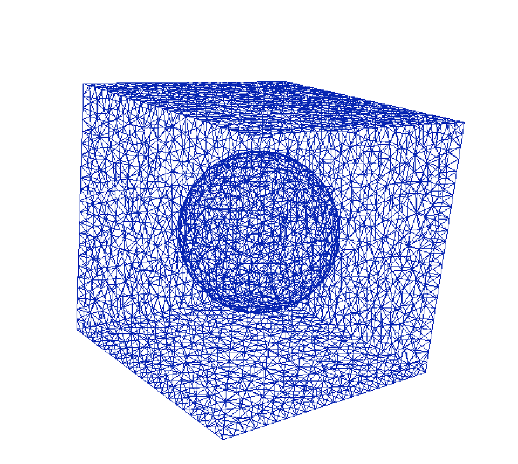
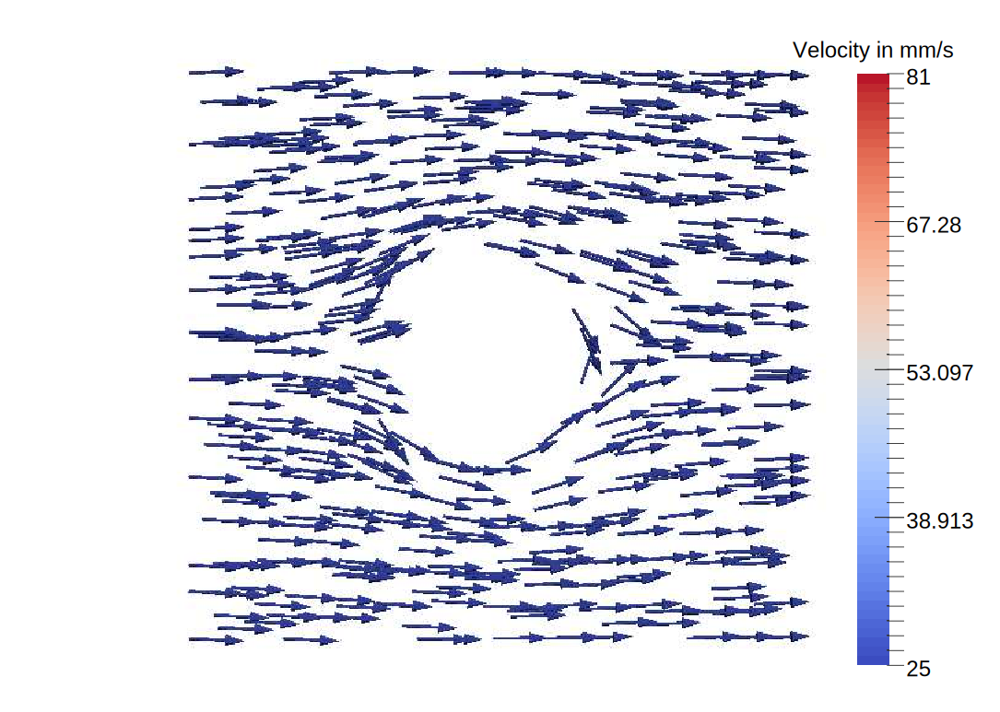
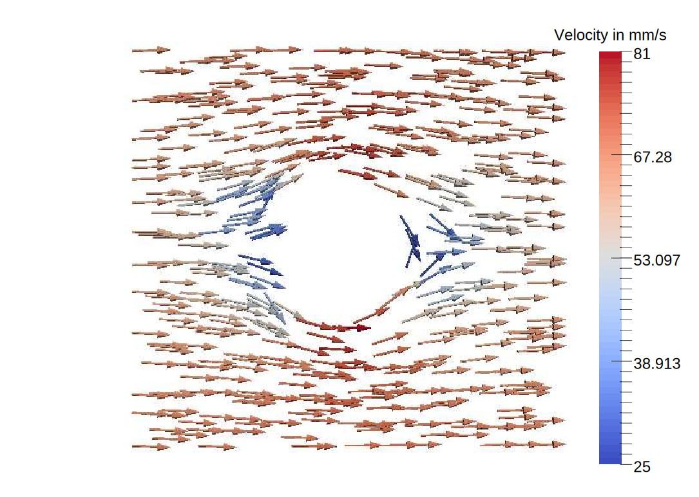

The PNP Solver
Finite Element Methods for the Poisson-Nernst-Planck equations coupled with Navier-Stokes Solver
The code
We are developing, in Python and C++, solvers for simulating charge-transport systems with an arbitrary number of charge-carrying species. These systems are modeled by the Poisson-Nernst-Planck (PNP) equations with the possibility of coupling to the Navier-Stokes (NS) equation to simulate electrokinetic phenomena. Our codes are based on the FEniCS package for discretizing the differential equations. This permits the use of any compatible linear algebra solver for solving the resulting linear system of equations.The solvers use continuous piecewise linear finite elements for the PNP system, and div-conforming (discontinuous) finite elements for the NS system. The nonlinearities of the system are handled by implementing a monolithic Newton approach of the entire PNP (and NS) system. The linearized systems are stabilized by an edge-averaged finite element (EAFE) approximation.
We are also developing a PyEAFE module. PyEAFE is a python implementation of the EAFE approximation for linear convection-diffusion-reaction equations with PDE finite coefficients based on the Dolfin software package. For coupled PDEs and nonlinear problems, helper methods exist in the module that allow users to define the PDE coefficients in terms of finite element functions and their derivatives; this is usefule for applying EAFE approximations to linearized systems resulting from a Newton iteration scheme or solving weakly coupled differential equations.
All our codes are available on Gitub:
| PyPNP: | Solver written in Python to simulate the Poisson-Nernst-Planck equations. Github Repository |
| Modular PNP | Solver written in C++ and using the FASP library as a linear solver. Github Repository |
| PyEAFE | Python module for EAFE discretization. Github Repository, Documentation |
The equations
Let us only consider the electrokinetic, Poisson-Nernst-Planck coupled with Navier-Stokes. In this case the unknowns are the electric potential $\phi$, the log-density $\eta_i$, $i=1,\dots,N$, the velocity $u$, and the pressure $p$. By denoting the fluid density by $\rho_f>0$, and the fluid viscosity by $\mu>0$, the electrokinetic system is described by \begin{align} -\nabla\cdot(\epsilon\nabla \phi) &= \sum_{i=1}^N q_i e^{\eta_i}, \label{electrokinetic poisson} \\ \frac{\partial e^{\eta_i}}{\partial t} &= \nabla \cdot \big(D_i e^{\eta_i}\nabla(\eta_i + q_i \phi) - e^{\eta_i}\vec u\big), & i=1,\ldots,N, \label{electrokinetic mass cons}\\ \rho_f\Big(\frac{\partial \vec u}{\partial t} + \vec u \cdot \nabla \vec u \Big) + \nabla p &= \nabla\cdot\big(2\mu \varepsilon( \vec u ) \big) + \sum_{i=1}^N q_i e^{\eta_i} \nabla \phi, \label{electrokinetic continuity}\\ \nabla \cdot \vec u &= 0, \label{electrokinetic incompressibility} \end{align} in $\Omega\times(0,T]$. For the viscosity term the symmetrized gradient is used, $\varepsilon(\vec u) = \frac12(\nabla \vec u + (\nabla \vec u)^T)$. Notice that when $\epsilon$ is small, $\nabla \phi$ is large and a boundary layer appears. The main issue with the electrokinetic model is that the usual solvers do not work. For example, we found that decoupling the the two systems PNP and NS and applying Gauss-Seidel method does not work, therefore we keep the system coupled and developed our own block preconditioner for the whole system.An interesting experiment on the electrokinetic model is observing the effect of an electric field on the motion of a charged colloid that is suspended in an electrolytic fluid. We consider sodium chloride solution in a cube with the charged colloid in the middle. We induce a voltage-drop $\delta V$, which is the difference between $\phi$ on the left and the right, and enforce concentrations of the moving charges on two opposite faces of the exterior boundary.
 Boundary conditions for a moving colloide. |

3D Mesh of the colloide. |
For this benchmark, the physical constraints on the fluid are that the fluid cannot flow into or out of the colloid; no flux boundary conditions are imposed on the surface of the colloid: \begin{equation*} u|_{x \in \Gamma_s} \cdot n = 0. \end{equation*} Then, when the voltage drop increases we see that it induces a flow.
|

Cut of $\|u\|$ at $z=0$ for $\delta V=50 mV$. |

Cut of $\|u\|$ at $z=0$ for $\delta V=250 mV$. |